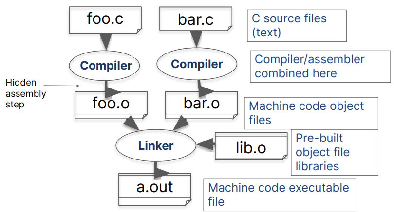

C 语言
- 预处理器
- 控制流
- if - switch
- for - while - do-while
- continue - break
- goto - return
- 表达式
- 值类别: 左值、右值、函数指代器
- 常量及字面量
- 求值顺序、运算顺序
- 运算符
- 未定义行为
- 对象
- 类型
- 基本类型
- 函数类型: 声明、定义、可变参数、inline
- 数组类型: 字符串、多维、隐式指针转换
- 指针类型: 对象指针、函数指针
- 枚举类型
- 自定义类型: 结构体、联合体、位域
- 存储说明符: typedef, constexpr, auto, register, static, extern, thread_local
- 类型限定符(cv限定符): const、volatile、restrict、_Atomic
- 对齐
- 存储期与链接
- 生存期
- 类型
求值顺序与运算顺序
C 语言中没有从左到右或从右到左求值的概念，不要将其与运算符的从左到右或从右到左结合性混淆：
表达式 f1() + f2() + f3() 因为 operator+ 的从左到右结合性而被分析成 (f1() + f2()) + f3()，
但运行时对 f3 的函数调用可以最先、最后，或在 f1() 与 f2() 之间求值。
若在子表达式 E1 和 E2 间存在序列点，则 E1 的值计算和副效应都先序于 E2 的所有值计算和副效应。
/* 未定义行为 */
i = ++i + i++; i = i++ + 1;
f(++i, ++i); f(i = -1, i = -1);
f(i, i++); a[i] = i++;
未定义行为
因为正确的 C 程序是没有未定义行为的，编译器可以在启用优化的条件下编译确实有 UB 的程序时，生成不期待的结果：
有符号溢出
int foo(int x) {
return x+1 > x; // 真或为有符号溢出导致的 UB
}
可以编译成
foo:
mov eax, 1
ret
建议开启编译器检查: -fsanitize=undefined
可变参数函数
int printf(const char *restrict format, ...);
int vprintf(const char *restrict format, va_list ap);
RTFM: man stdarg
- 定义
va_list变量 - 通过
va_start获取可变参数列表 - 通过
va_arg获取可变参数 - 通过
va_end销毁资源 - 通过
va_copy拷贝可变参数列表
可变参数的使用类似动态分配，请记得销毁资源和必要时进行
va_copy拷贝
函数指针
指向函数的指针可由函数地址初始化。因为函数到指针存在隐式转换，取址运算符是可选的。
指向函数的指针可以用作函数调用运算符的左操作数；这会调用所指向的函数。
#include <stdlib.h>
void qsort(void base[.size * .nmemb], size_t nmemb, size_t size,
int (*compar)(const void [.size], const void [.size]));
void *bsearch(const void key[.size], const void base[.size * .nmemb],
size_t nmemb, size_t size,
int (*compar)(const void [.size], const void [.size]));
int compare_int(void *a, void* b) { return *(int*)a - *(int*)b; }
int (*compar)(const void *a, const void* b) = compare_int;
int a = 1, b = 2;
compare_int(&a, &b);
compar(&a, &b); (*compar)(&a, &b);
qsort(array, sizeof array / sizeof array[0], sizeof array[0], compar);
指针与数组与函数
理解定义请参考运算符优先级
/* 优先级: [] > * > ()
* 变量 p 的运算符使用顺序应该是 (* ( p[] ) ) ()
* p 首先被取下标 [] -> p 是一个 5 个元素的数组
* p[] 可以被解引用 * -> p[] 是一个指针
* (*p[]) 可以进行函数调用 () -> *p[] 是一个函数指代器
* p 是一个 函数指针 的数组，数组有 5 个元素
* 指针指向 int(void) 的函数类型
*/
int (*p[5])(void);
/* 建议使用 typedef 避免复杂类型定义 */
typedef int (*fn_t)(void); // fn_t 是指向 int(void) 的函数指针
typedef fn_t fn_arr_t[]; // fn_arr_t 是 fn_t 的数组
fn_arr_t fn_array[5]; // 类型同 p
/* 比如我们的标准库的信号处理函数指针 */
typedef void (*sighandler_t)(int);
结构体与联合体
结构体是由一序列的成员组成的类型，成员顺序分配于内存中
联合体相反，联合体是由一个序列的成员组成的类型，成员重叠存储在内存中
typedef enum RetType_t { ret_int, ret_double } RetType_t;
typedef struct {
RetType_t ret_type;
union {
int int_val; double double_val;
}; // 匿名联合体
} Ret_t;
Ret_t f(RetType_t ret_type) {
switch(ret_type) {
case ret_int: return (Ret_t){.ret_type = ret_int, .int_val = 1};
case ret_double: return (Ret_t){.ret_type = ret_double, .double_val = 1.0};
}
}
对齐要求
alignof(类型名) 运算符可以用于查询类型的对齐要求，表示此类型对象可以分配的相继地址之间的字节数。
结构体和联合体为了同时满足成员和结构体的对齐要求，会导致不同的对象大小和对齐要求。
struct S {
char a; // 成员对象大小：1，对齐：1
char b; // 成员对象大小：1，对齐：1
}; // 结构体对象大小：2，对齐：1
/* struct X 的对象必须分配于 4字节边界
* 因为 X.n 必须分配于 4 字节边界
* 因为 int 的对齐要求（通常）是 4 */
struct X {
int n; // 成员对象大小：4，对齐：4
char c; // 成员对象大小：1，对齐：1
// 剩余的三个字节进行空位填充
}; // 结构体对象大小：8，对齐：4
位域
声明带有明确宽度的成员，按位数计。相邻的位域成员可能被打包，共享和分散到各个单独的字节。
struct S {
// 通常将占用 8 字节
// 5 位： b1 的值
// 27 位：未使用
// 6 位： b2 的值
// 11 位：未使用
// 15 位： b3 的值
unsigned b1 : 5;
/* 拥有零 宽度 的特殊无名位域打破填充：
* 它指定下个位域在始于下个分配单元的起点 */
unsigned : 0;
unsigned b2 : 6;
unsigned : 11;
unsigned b3 : 15;
};
类型限定符
- const: 编译器可以把声明为带 const 限定类型的对象放到只读内存中，并且若程序从来不获取该 const 对象的地址，则可能完全不存储它。
- 对类型被 const 限定的对象的任何修改尝试都导致未定义行为。
- volatile: 阻止编译器对带 volatile 限定类型的对象进行优化，确保对对象的操作严格执行。
- restrict: 仅用于指向对象类型的指针，用于指示指针是程序中唯一直接访问其所指向对象的方式，帮助编译器优化。
_Atomic: 多线程相关
最佳实践:
- 仅确保在条件满足时，使用
restrict - 使用
const保护不该被修改的对象
指针与 const
int a = 1;
const int b = 2;
/* 标明 p1 指针指向 const int
* 无法通过 p1 指针修改指向的对象
*/
const int *p1 = &a;
/* 标明 p2 指针本身不可修改
* 保证 p2 指针始终指向对象 a
*/
int *const p2 = &a;
p2 = &b; // 编译错误
/* 指针与指向对象均不可修改 */
const int *const p3 = &a;
/* 危险，可能导致 UB */
int *p4 = &b;
生存期、存储期与链接
生存期=对象存储期或临时对象
auto - 自动存储期与无链接register - 自动存储期与无链接；不能取这种对象的地址- static - 静态存储期与内部链接（除非在块作用域）
- extern - 静态存储期与外部链接（除非已声明带内部链接）
thread_local - 线程存储期
若不提供存储类说明符，则默认为：
- 对所有函数为 extern
- 对在文件作用域的对象为 extern
- 对在块作用域的对象为 auto
存储期
- 自动存储期。当进入对象所声明于其中的块时分配其存储，而当以任何方式（goto、return、抵达结尾）退出该块时解分配存储。
- 静态存储期。存储期是整个程序的执行过程，只在 main 函数之前初始化一次存储于对象的值。
线程存储期。- 分配存储期。按照请求，用动态内存分配函数分配和解分配存储。
最佳实践:
- 使用
static声明静态存储期，使对象存在整个程序的执行过程。 - 使用动态内存分配手动管理程序内存。
链接
- 无链接。只能从其所在的作用域指代该标识符。
- 内部链接。能从当前翻译单元的所有作用域指代该标识符。
- 外部链接。能从整个程序的任何其他翻译单元指代该标识符。
最佳实践:
- 不要使用全局对象: 静态存储期和外部链接
- 可以使用静态存储期和内部连接的对象
- 使用
static声明不需要暴露到全局的函数
多文件编译
- 头文件:
- 头文件保护
- 宏定义
- 类型声明
- 暴露类型定义
- 对象声明
- 函数声明
- static/inline 函数定义
- 源文件:
- 类型定义
- 对象定义
- 函数定义
头文件保护
考虑下面这种情况:
/* a.h */
#include "b.h"
static int sum(int a, int b) { return a + b; }
/* b.h */
#include "a.h"
/* main.c */
#include "a.h"
#include "b.h"
其中函数 sum 的定义在 main.c 引入了两次，违反了唯一定义规则，会导致编译错误。
使用头文件保护确保头文件仅能被同一个源文件#include一次
#ifndef __HEAD_FILENAME_H__
#define __HEAD_FILENAME_H__
/* ... */
#endif
或
#pragma once
#pragma once 是受到绝大多数现代编译器支持的非标准语用。当某个头文件中包含它时，指示编译器只对其分析一次，即使它在同一源文件中（直接或间接）被包含了多次也是如此。
头文件最佳实践
#ifndef __MATH_UTILS_H__
#define __MATH_UTILS_H__
// 1. 包含其他头文件
#include <stdbool.h>
// 2. 宏定义
#define PI 3.14159
#define MAX(a, b) ((a) > (b) ? (a) : (b))
// 3. 类型定义
typedef struct {
double x; double y;
} Point;
// 4. 函数声明
bool double_equal(double a, double b);
// 5. 内联函数
inline double square(double x) { return x * x; }
#endif // __MATH_UTILS_H__
编译器
RTFM: man gcc
| 编译选项 | 功能 |
|---|---|
-E |
对源文件进行预处理 |
-S |
将源文件编译为汇编代码(C 代码 -> 汇编代码) |
-c |
将源文件编译为对象文件(C 代码 -> 机器代码) |
-o |
指定输出文件名 |
-std=... |
选择使用的 C 语言标准规范 |
-Wall |
开启所有可能的警告（建议开启） |
-Werror |
将所有警告视为错误（建议开启） |
-g |
生成调试信息（为调试器提供信息） |
编译器
| 编译选项 | 功能 |
|---|---|
-O(g/1/2/3/s, ...) |
启用优化（需要调试程序时，建议使用-Og或不优化） |
-Idir |
指定头文件搜索路径（dir） |
-Ldir |
指定库文件搜索路径（dir） |
-Dmacro |
定义宏（macro = 定义的值） |
-llib |
指定连接的库文件 |
-fsanitize=type |
启用类型相关的问题运行时检测，帮助识别类型不匹配和越界 |
-v |
输出详细的编译过程信息 |
免费的午餐
# 开启调试信息
# 启用严格的编译检查
# 开启程序运行时检测（地址访问与未定义行为检测）
# sanitize 建议使用 clang，gcc的支持不够好
clang -g -Og -Wall -Werror -fsanitize=address \
-fsanitize=undefined -o output input.c
# 开启 O2 优化，一般很少使用 O3
# 开启链接时优化
gcc -O2 -flto -Wall -Werror -o output input.c
熟悉基础设施，可以提高效率！
编译详解

编译详解
gcc -v -Wl,-verbose -o output input.c
- 预处理阶段: 替换注释为空格、宏文本替换
-Idir:#include的搜索目录
- 编译阶段: 编译翻译单元为汇编代码
- 汇编阶段: 编译汇编代码为对象文件
- 链接阶段: 链接程序运行环境
-Ldir:-llib的搜索目录-static: 进行静态链接（默认为动态链接）-llib: 尝试链接liblib.so和liblib.a文件ldd: 查看程序动态链接的动态库- 动态链接: 程序加载时根据路径加载动态链接库
- 静态链接: 编译链接时将库编译进可执行文件
GNU Make
GNU Make是一个自动化构建工具，用于管理和维护大型程序和项目的构建过程。通过读取定义了一系列规则的“Makefile”文件，根据文件修改时间来使用命令重新重新目标。
- 目标: 通常是Makefile中要生成的文件或要执行的动作
- 写在规则行的最左边。
- 比如: 可执行文件
- 依赖: 确定目标如何生成，列出生成目标需要依赖的文件。
- 位于目标后列出的文件或目标。
- 比如: 源代码和头文件
- 规则: 描述目标与依赖文件之间的依赖关系
target: dependencies - 命令: 指定如何编译代码或构建目标。
- 位于规则下方，需要使用Tab缩进。
Makefile 示例
# 变量定义
CC := gcc
CFLAGS := -Wall -Werror -g -Og
TARGET := program
SRCS := main.c
OBJS := $(SRCS:.c=.o)
# 首个规则为 make 的默认目标
all: $(TARGET)
# 链接目标文件
$(TARGET): $(OBJS)
$(CC) $(CFLAGS) -o $(TARGET) $(OBJS)
# 生成对象文件
%.o: %.c
$(CC) $(CFLAGS) -c -o $@ $<
# 清理生成的文件
clean:
rm -f $(OBJS) $(TARGET)
# 伪目标
.PHONY: all clean
调试理论
Code -> Executable file -> Fault -> Error -> Failure
软件工程领域中的三种 “错误”:
- Fault - 有bug的代码
- 如数组访问越界, 根据C语言标准, 这是UB
- Error - 程序运行时刻的非预期状态
- 如某些内存的值被错误改写
- Failure - 可观测的致命结果
- 如输出乱码/assert失败/段错误等
调试 = 看着Failure, 找到Fault
调试过程
Start Fault Failure
+---------------------+------------------+
|------ Error -----|
程序员能做的:
- 看到Failure, 知道肯定有问题
- 可以检查程序的某个状态是否正确
但检查这件事并不容易
- 需要程序员来模拟一个应该正确的状态机的转移
- 人肉DiffTest
- 看上去都 “没什么问题”, 只能慢慢定位
调试公理
1. 机器永远是对的
程序出错了, 不要怀疑真机的硬件/操作系统/编译器, 先怀疑自己的代码
2. 未测试代码永远是错的
bug往往出现在那些你觉得“应该没问题”的地方
要解决问题, 先摆正心态
Tracer
输出日志追踪程序状态
__func__: 当前函数__FILE__: 当前文件名__LINE__: 当前行号__VA_ARGS__: 可变参数
#define ANSI_FG_BLUE "\33[1;34m"
#define ANSI_NONE "\33[0m"
#define ANSI_FMT(str, fmt) fmt str ANSI_NONE
#define Log(format, ...) \
printf(ANSI_FMT("[%s:%d %s] " format, ANSI_FG_BLUE) "\n", \
__FILE__, __LINE__, __func__, ## __VA_ARGS__)
断言
- assert - 将预期的正确行为直接写到程序中
- 保证程序运行中的不变量
- 免费的午餐:
#define NDEBUG
调试理论层面的意义:
- 如果捕捉到Error, 通过终止程序马上转变为可观测的Failure
- 避免Error继续传播, 造成更难理解的Failure
- 能够大幅提升调试效率
一些好的编程习惯:
- 访问数组前先检查下标assert(idx < ARRAY_SIZE);
- 指针解引用前先assert(p != NULL);
- switch-case不存在默认情况时default: assert(0);
单元测试
在计算机编程中，单元测试又称为模块测试 ，是针对程序模块（软件设计的最小单位）来进行正确性检验的测试工作。
写单元测试是份累活:
- 枚举所有可能的输入情况
- 你不会愿意一个个手写出来的 😂
- 需要软件工具来辅助我们
- 全遍历测试 - 写个程序/脚本, 生成全排列的测试用例
- 随机测试 - 随机生成输入情况
- 对于复杂的设计: 验证空间 vs. 边界情况覆盖率
- 需要更好的规则指导, 这是一个前沿的研究问题
免费的午餐: Lint
通过分析代码(静态程序分析), 提示编译通过但有潜在错误风险的代码
- 在编译阶段消灭Fault!
- 虽然无法捕捉所有Fault, 但非常划算
编译器一般自带lint工具
- gcc中的-Wall, -Werror
- clang中的analyzer
clangd和clang-tidy
- 格式化代码: 观察控制流语句的缩进
- 静态分析: 未初始化的变量，未使用的变量
sanitize 与 valgrind
sanitize:
- 让编译器自动插入assert, 拦截常见的非预期行为
- AddressSanitizer - 检查指针越界, use-after-free
- LeakSanitizer - 检查内存泄漏
- UndefinedBehaviorSanitizer - 检查UB
- man gcc查看具体用法
valgrind:
- 更加强大的 sanitize
- 不需要编译时启用
使用它们后程序运行效率有所下降
- 但调试的时候非常值得, 躺着就能让工具帮你找bug
调试器: GDB
调试器: 可以根据需要暂停程序，并允许观察程序当前状态
| 功能 | GDB 命令 | 说明 |
|---|---|---|
| 启动 GDB | gdb ./your_program |
启动 GDB 并加载指定程序 |
| 运行程序 | run |
启动并运行程序 |
| 退出 GDB | quit |
退出 GDB |
| 设置断点 | break main |
在 main 函数入口设置断点 |
break 10 |
在第 10 行设置断点 | |
| 删除断点 | delete |
删除所有断点 |
delete <breakpoint_number> |
删除特定断点，例如 delete 1 |
GDB
| 功能 | GDB 命令 | 说明 |
|---|---|---|
| 查看当前断点 | info breakpoints |
显示所有断点信息 |
| 继续执行 | continue |
从断点处继续执行程序 |
| 单步执行 | next |
单步执行下一行 |
step |
单步执行，并进入函数调用 | |
| 运行到下一断点 | finish |
执行当前函数直到返回 |
| 查看当前堆栈 | where |
显示当前的堆栈跟踪 |
| 查看变量值 | print variable_name |
查看变量值，例如 print a |
| 查看内存值 | x pointer |
查看指针指向的内存的值 |
| 查看帮助 | help |
显示 GDB 的帮助信息 |
正确的编程模式: 少写Fault
正确的代码 != 好代码
好代码更大概率是正确的
好代码的两条重要准则:
不言自明 -仅看代码就能明白 是做什么的(specification)不言自证 -仅看代码就能验证 实现是对的(verification)
使用正确的编程模式写出好代码:
- 防御性编程 - 通过assert检查非预期行为
- 减少代码中的隐含依赖 - 使得 “打破依赖”不会发生
- 头文件 + 源文件
- 编写可复用的代码 - 不要Copy-Paste
- 使用合适的语言特性 - 把细节交给语言规范和编译器